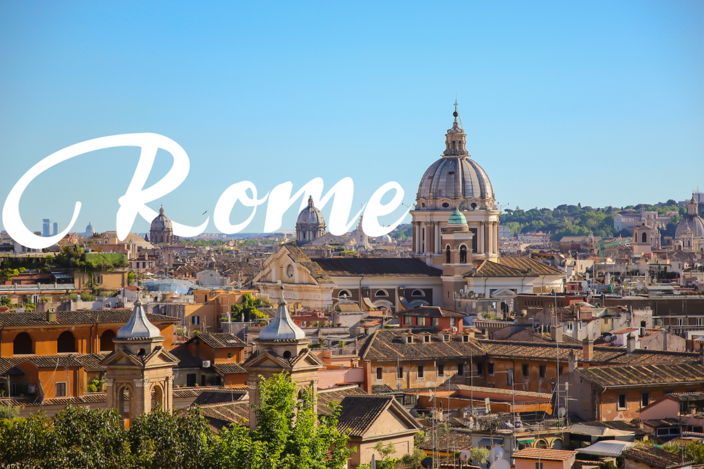
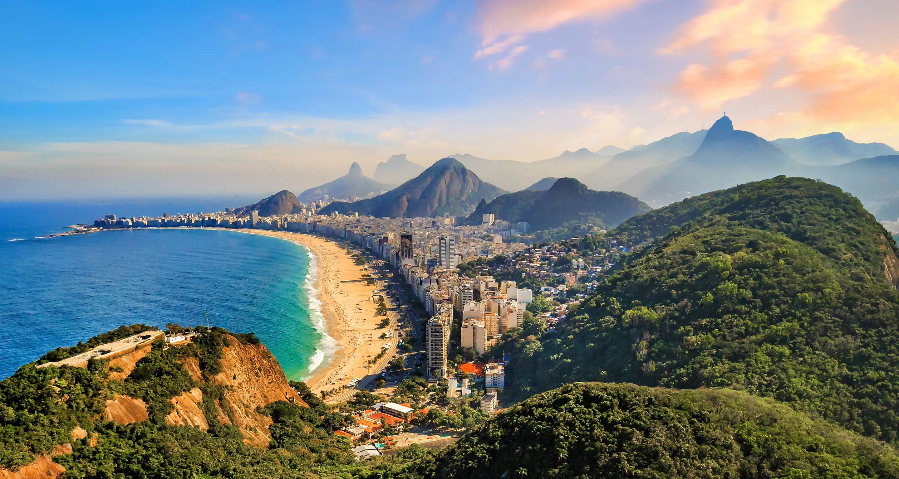

Paris, France

Known as the "City of Love" and the "City of Lights," Paris is famous for its romantic ambiance, iconic landmarks such as the Eiffel Tower and Louvre Museum, charming neighborhoods like Montmartre, and world-class cuisine.
Tokyo, Japan

A blend of traditional culture and futuristic technology, Tokyo offers a unique experience. From historic temples and gardens to modern skyscrapers and vibrant neighborhoods like Shibuya and Shinjuku, there's something for everyone.
Rome, Italy
A city steeped in history and culture, Rome boasts ancient ruins like the Colosseum and Roman Forum, magnificent art in the Vatican Museums, and the stunning architecture of St. Peter's Basilica. The city's romantic atmosphere and delicious Italian cuisine add to its allure.
Rio de Janeiro, Brazil
Known for its beautiful beaches, lush landscapes, and vibrant Carnival celebrations, Rio de Janeiro is a destination full of energy. The iconic Christ the Redeemer statue atop Corcovado Mountain and the stunning Sugarloaf Mountain are must-see landmarks.